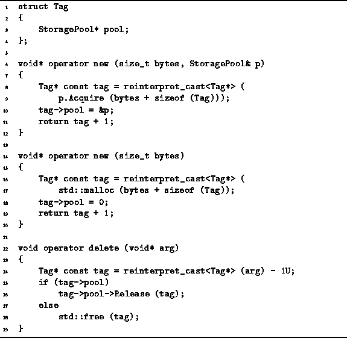
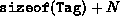
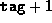

Data Structures and Algorithms
with Object-Oriented Design Patterns in C++
Data Structures and Algorithms
with Object-Oriented Design Patterns in C++C++ provides the means for the programmer to control the placement of dynamically allocated storage. The placement syntax provides additional arguments to the new operator like this:
T* tptr = new (argument list...) T;The extra arguments in the argument list are passed to a suitably overloaded version of operator new.
For example, suppose that we provide an operator new function with the following definition:
void* operator new (size_t bytes, StoragePool& p)
{ return p.Acquire (bytes); }
I.e., we have declared a version of operator new
that takes two arguments.
The first specifies the number of bytes to be allocated,
and the second is a reference to an instance of a storage pool
from which the storage is to be acquired.
We can then write the following statement:
SomePool p, q; T* tptr1 = new (p) T; T* tptr2 = new (q) T;Two distinct storage pools are declared--p and q. The first instance of T is allocated in the pool p, whereas the second instance is allocated in the pool q.
Unfortunately, but not without good cause, it is not possible to overload operator delete in an analogous fashion. There is no explicit way to return storage to a specific pool using operator delete. I.e., the only way to release storage is by using operator delete like this:
delete tptr1; delete tptr2;What we would like to happen is for the first delete to invoke the Release member function of the pool p, and for the second delete to invoke the Release function of the pool q.
One way to achieve this is to keep track explicitly of the pool
from which the memory was acquired
in each block of dynamically allocated storage.
We can accomplish this by attaching to each block
a tag which contains a pointer to a pool to which it belongs.
Program  shows how this can be done.
shows how this can be done.

Program: Overloading operator new and operator delete
The Tag struct encapsulates the tag which is attached to each block of dynamically allocated storage. In this implementation, the tag appears in memory immediately before the memory address returned to the caller. This means that when N bytes of storage are required,  bytes are actually allocated. The tag occupies the first bytes. However, it is a pointer to the remaining N bytes that is returned to the user.
Two versions of operator new are defined in Program .
The first version makes use of the placement syntax described above
to allow the user to specify the storage pool from which to allocate storage.
This version saves a pointer to the pool from which the storage is allocated
in the adjacent tag (lines 6-12).
Notice that the function returns 
which is the address of the memory location which immediately follows the tag.
The second version of operator new is the version that gets invoked when the user does not use the placement syntax to specify the memory pool from which to acquire the storage. In this case, since no storage pool is specified, the standard C library routine malloc is called. And since no pool has been specified, the adjacent tag field is set to zero (lines 14-20).
Since every block of dynamically allocated storage will have been tagged,
the delete operator can determine the pool to which the storage
is to be returned from the tag field.
As shown in Program ,
operator delete obtains a pointer to a StoragePool
from the tag and calls the Release member function of that pool
if the pointer is nonzero.
If the pointer is zero,
the malloc routine was used to acquire the storage.
Therefore, the C library routine free
is called to release the storage (lines 22-29).
Given that we have defined the operations as shown in Program
and that we have at our disposal a concrete storage pool class,
say SomePool,
we can safely write the following program fragment:
SomePool p, q; T* tptr0 = new T; T* tptr1 = new (p) T; T* tptr2 = new (q) T; // ... delete tptr0; delete tptr1; delete tptr2;Each of the three instances of class T is allocated in a different memory pool. Nevertheless, each object is properly returned to the pool from which it came by the delete operation!
 Copyright © 1997 by Bruno R. Preiss, P.Eng. All rights reserved.
Copyright © 1997 by Bruno R. Preiss, P.Eng. All rights reserved.